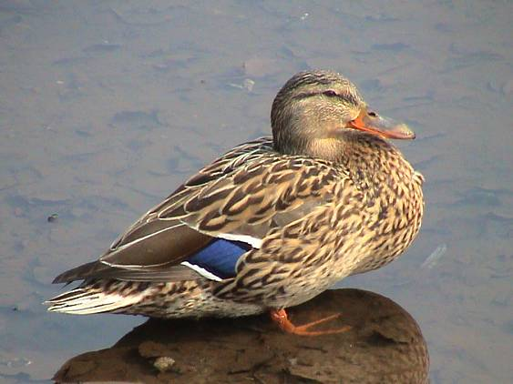
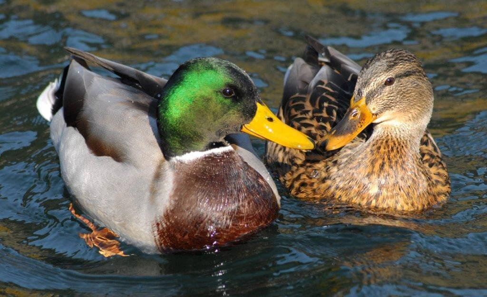
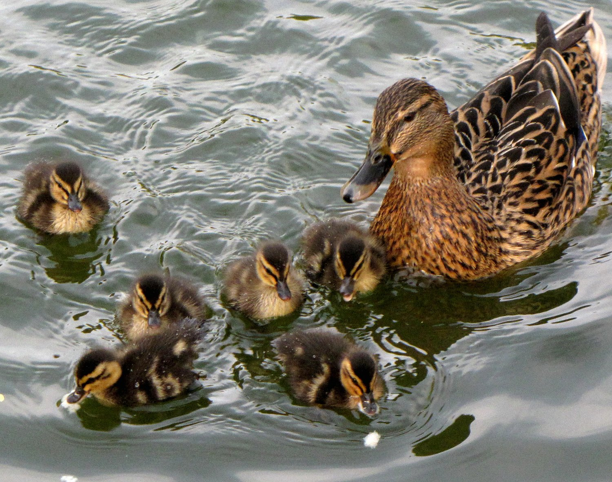
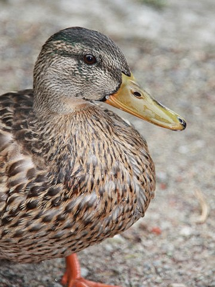
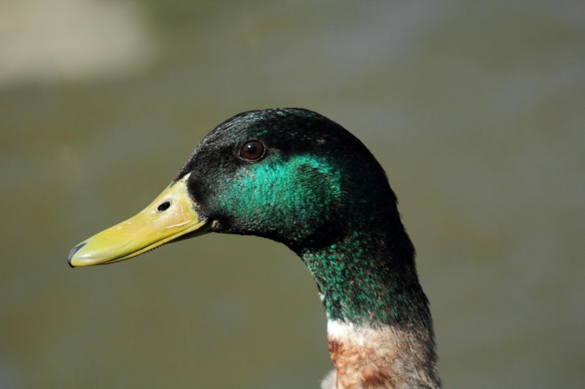
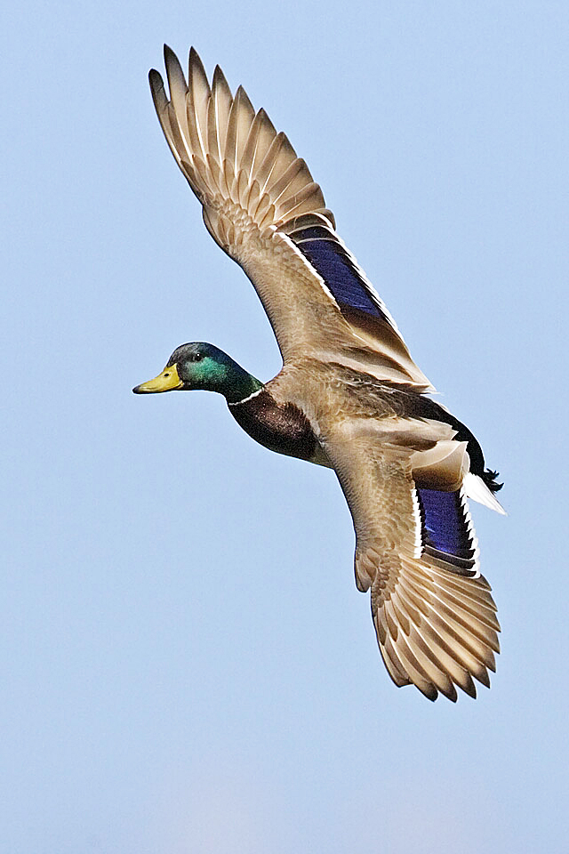
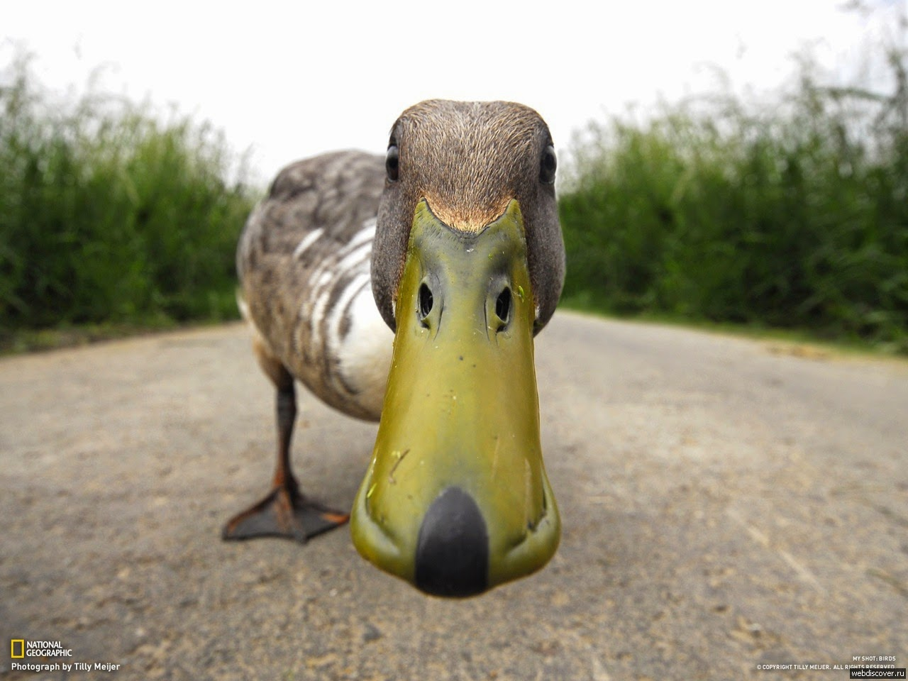
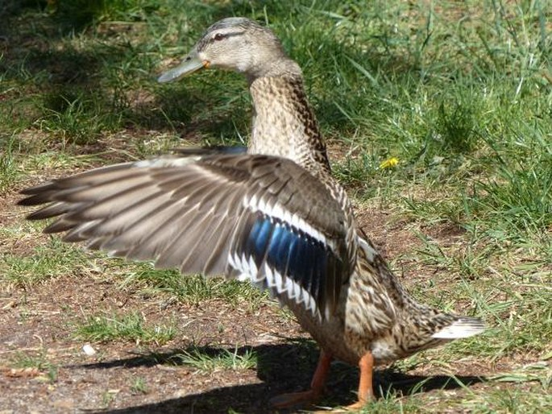

Popis
Kachna divoká, známá také jako kachna zelenonohá, je druh kachny, který obývá mnoho částí světa. Patří mezi oblíbené cíle jak loveckých aktivit tak i pozorovacích klubů.
Jedná se o vodního ptáka s charakteristickým zbarvením a zvukem. Její populace se v různých částech světa liší podle prostředí, ve kterém žije.
Obrázky







